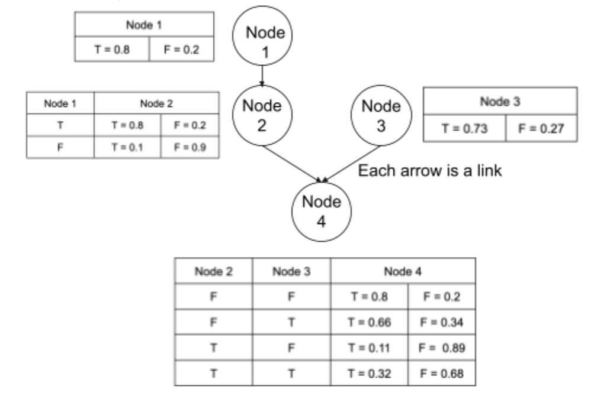

- Machine Learning Exercises
-
Session 1: Introduction to Machine Learning
- Introduction to Machine Learning
- What is machine learning
- Influences of Machine Learning
- Components of Machine Learning
- Representation
- Evaluation
- Optimization
- Types of Machine Learning
- Challenges of Machine Learning
- Before starting your own machine learning project
-
Session 2: Bayesian Decision Theory
- What is a Bayesian network?
- How is a Bayesian network represented?
- What Directed Acyclic Graphs Tell Us
- Applications of Bayesian Networks
-
Session 3: Intro to Supervised Learning
- Intro to Supervised Learning
- When to use supervised learning
- Types of Supervised Learning
- Classification
- Regression
- Examples of Supervised Learning Algorithms
- Linear Regression
- Logistic Regression
- Decision Trees
- Random Forest Regression
-
Session 4: Intro to Unsupervised Learning
- When to use unsupervised learning
- Types of Unsupervised Learning
- Clustering
- Association
- Example of an Unsupervised Learning Algorithm
- K-Means Clustering
-
Session 5: Dimensionality Reduction
- Intro to Dimensionality Reduction
- Feature Selection
- Types of Feature Selection
- Wrappers
- Filters
- Embedded
- Feature Extraction
- Example of A Feature Extraction Technique
- Principal Component Analysis
-
Session 6: Perceptrons and Neural Networks
- Influence of Biological Neurons
- Development of Neural Networks
- Perceptron
- What is a perceptron?
- Parts of Perceptron
- Neural Network
-
Session 7: Deep Learning
- Deep Learning vs Machine Learning
- Deep Neural Network
- Deep Learning
- Transfer Learning
- Number of Neurons for Each Hidden Layer
-
Session 8: Machine Learning Research Trends
- Applications of Machine Learning in Various Fields
- Full-Stack Deep Learning
- Natural Language Processing
- Natural Disaster Warning
- Gaming
- Resources to Look into Latest Research
Session 2: Bayesian Decision Theory
Reinforcement Learning
- Repetitive teaching
- Kind of like giving the machines a test as the machine learns from feedback when it provides an incorrect answer.
- Let’s say there’s a situation in which the machine has to guess what kind of music category is being played. If classical piano music is playing, but the machine says it’s “pop”, then the machine will be told it’s wrong. If it guesses “classical”, then the machine will be told that it’s right. The more data the machine is shown, the more the machine will know about the music category.
What is a Bayesian network?
- Also known as:
- Bayes network
- Bayes net
- Belief network
- Decision network
- Used to represent probabilistic relationships. It’s our best way to predict life’s uncertain moments, such as the weather. When given a set of data, Bayesian networks can use that data to provide a conclusion to a problem.
How is a Bayesian network represented?
- Directed acyclic graphs
- Acyclic: goes in one direction
- Contains a set of nodes and links
- Links: relationship between the nodes
- Nodes: circles, denote the variables
- Edges define relationship between the nodes
- At the very top, we have the root nodes, which don’t have any dependencies so there’s only one outcome for each root node.
- Node 1 and Node 3 are root nodes
- Going through the next levels, we have dependencies on the node’s parents, which will need to be factored into the model.
- Node 2 depends on Node 1
- Node 4 depends on Node 2 and Node 3
What Directed Acyclic Graphs Tell Us:
- Uses conditional probability to model uncertainty
- Conditional probability: probability of event B happening as a result of event A, can also be written as p (B |A)
- Dependent events: p(B | A) = p (A and B) / p (A)
- Since A and B are dependent, given that event A occurs, the probability that event B occurs will depend on event A
- Independent events: p(B | A) = p (B)
- Since A and B are independent, neither will occur when given the other.
- If we’re looking into the probability of two or more events happening simultaneously, this is called joint probability
Applications of Bayesian Networks
- Predict stock price
- Spam filtering
- Predicting the weather
- Game outcomes